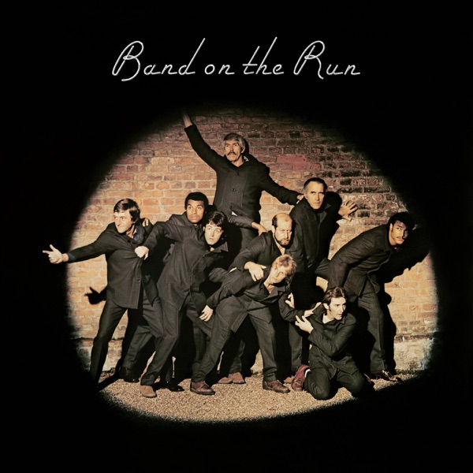

Band On The Run
Wings
- Original release
- 1973
- Pressing year
- 1973
- Country
- US
- Format
- Vinyl LP, Album, Stereo
- Label / Cat#
- Apple Records – SO-3415
- Genres
- Rock
- Styles
- Pop Rock
- Discogs release
- 30091652
- Discogs master
- 48878
- Apple Music
- Band On The Run (2010 Remaster)
- Wikipedia
- Band On The Run
Production notes
Tracklist (Discogs)
| A1 | Band On The Run | 5:09 |
| A2 | Jet | 4:08 |
| A3 | Bluebird | 3:22 |
| A4 | Mrs. Vandebilt | 4:40 |
| A5 | Let Me Roll It | 4:51 |
| B1 | Mamunia | 4:51 |
| B2 | No Words | 2:36 |
| B3 | Helen Wheels | 3:45 |
| B4 | Picasso's Last Words (Drink To Me) | 5:48 |
| B5 | Nineteen Hundred And Eighty Five | 5:30 |
Tracklist (Apple Music)
| 1 | Band On The Run | 5:13 |
| 2 | Jet | 4:09 |
| 3 | Bluebird | 3:25 |
| 4 | Mrs. Vandebilt | 4:41 |
| 5 | Let Me Roll It | 4:50 |
| 6 | Mamunia | 4:50 |
| 7 | No Words | 2:36 |
| 8 | Picasso's Last Words (Drink to Me) | 5:49 |
| 9 | Nineteen Hundred and Eighty Five | 5:32 |
Personnel & credits
- Geoff Emerick — Engineer
- Wally Traugott — Lacquer Cut By
- Tony Visconti — Orchestrated By
- Ginger Baker — Percussion
- Remi Kabaka — Percussion
- Paul McCartney — Producer, Vocals, Bass, Drums, Piano, Percussion, Guitar, Written-By
- Howie Casey — Saxophone
- Denny Laine — Vocals, Bass, Guitar
- Linda McCartney — Vocals, Organ, Percussion, Keyboards
Identifiers
- Rights Society: BMI
- Price Code: (0698) (Spine)
- Matrix / Runout: SO1-3415 (Label side A)
- Matrix / Runout: SO2-3415 (Label side B)
- Matrix / Runout: SO 1 3415 F10 Wly #10 MASTERED BY CAPITOL (Runout side A variant 1)
- Matrix / Runout: SO 2 3415 F26 #2 MASTERED BY CAPITOL (Runout side B variant 1)
- Matrix / Runout: SW1 3415 F10 wly #9 MASTERED BY CAPITOL (Runout side A variant 2)
- Matrix / Runout: SO 2 3415 F27 MASTERED BY CAPITOL (Runout side B variant 2)
Notes
Runouts are etched except for MASTERED BY CAPITOL which is stamped.
This is identical to [r471170] except that this only has lacquer cut by Wly on Side A rather than both sides.
An Apple Record
℗1973 EMI Records.
Special Thanx to EMI Studios (Lagos and London) and ARC Studio Lagos and Clive Arrowsmith, Tony Visconti, Ian and Trevor Gordon House and Storm Thorgerson. And Paul would like to thank Linda and Linda would love to thank Paul and thanx Denny.
Issued with one-sided color poster.
Printed inner sleeve omits lyrics for the track "Helen Wheels" which was only included on the US and Canadian editions of the LP.
The track is listed on the outer sleeve, back.
The artist title on the spine is "Paul McCartney" omitting the "Wings" band name unlike the labels.
Notes & discrepancies
- Track count differs: Discogs=10, Apple Music=9
- Total runtime differs by 215s (Discogs=2680s, Apple Music=2465s) — likely a different master/remaster.
Released November 1973 on Apple Records, Band on the Run is the third studio album by Paul McCartney and Wings and the record that turned the band’s fortunes around. Down to a trio—Paul, Linda McCartney, and Denny Laine—after two members quit on the eve of the sessions, the group decamped to EMI’s studio in Lagos, Nigeria to record much of the album under famously difficult conditions. Paul handled drums and much of the instrumentation himself, and the result became one of the most acclaimed and commercially successful records of his post-Beatles career, yielding the hits “Jet,” “Helen Wheels,” and the title track. Orchestral arrangements were contributed by Tony Visconti.
About this 1973 US Apple pressing (LP, Stereo): Apple Records catalog
SO-3415, released November 26, 1973. Discogs release [r30091652]. An original US pressing, ℗1973 EMI Records, issued with the one-sided color poster and a printed inner sleeve. Note the US/Canada-specific quirk: “Helen Wheels” was added to the North American editions, and while it is listed on the outer sleeve back, the printed inner sleeve omits its lyrics. The spine credits only “Paul McCartney,” dropping the Wings name that appears on the labels.The lacquers were cut at Capitol—every runout carries the stamped MASTERED BY CAPITOL (the rest of each matrix is hand-etched). This particular copy is the variant whose Side A alone was cut by the engineer signing
Wly, the initials attributed to Capitol mastering engineer Wally Traugott; Side B carries a different cut. Your Side A runout readsSW1 3415 F10 Wly #9 MASTERED BY CAPITOL—theSW1cut designation and the#9stamper number are what distinguish this pressing from its otherwise-identical siblings (a near-twin, [r471170], carries the sameSW1 3415 F10 Wlyon Side A but#7, and has the Wly cut on both sides).